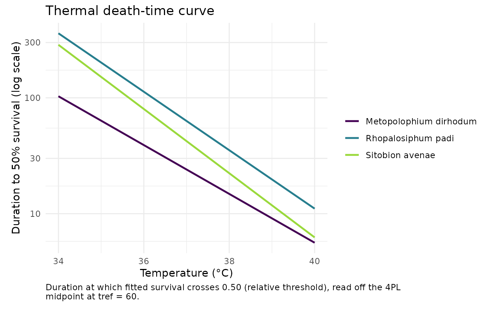
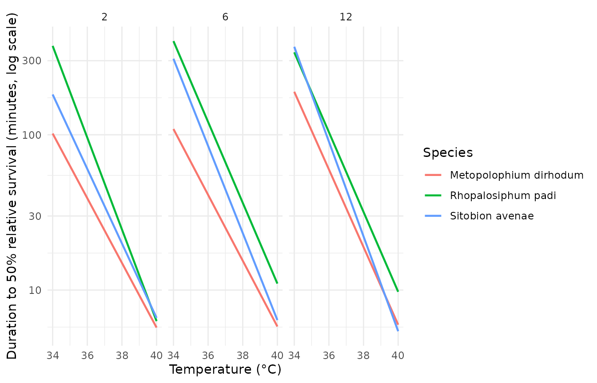

Case 2: cereal-aphid thermal tolerance
Source:vignettes/case-study-li-aphids.Rmd
case-study-li-aphids.RmdThis article follows the cereal-aphid case in the bayesTLS
supplement: the heat branch, 6-day-old aphids for the main analysis,
then the all-age heat extension.
Main analysis: heat branch at age 6
aphid6 <- droplevels(subset(aphid_tdt, branch == "heat" & age == "6"))
aphid6$species <- factor(
aphid6$species,
levels = c("M_dirhodum", "R_padi", "S_avenae"),
labels = c("Metopolophium dirhodum", "Rhopalosiphum padi",
"Sitobion avenae")
)
aphid6_std <- standardize_data(
aphid6, temp = "temp", duration = "duration_min",
n_total = "n_total", n_surv = "n_surv", duration_unit = "minutes"
)The beta-binomial model gives each species a direct
CTmax and z, lets steepness vary with centred
assay temperature, and shares low and up.
t_ref = 60 is one hour because the standardized duration
unit is minutes.
aphid6_fit <- fit_4pl(
aphid6_std,
ctmax = ~ 0 + species,
z = ~ 0 + species,
low = ~ 1,
up = ~ 1,
k = ~ temp_c,
family = "beta_binomial",
t_ref = 60,
method = "wald",
quiet = TRUE
)
diagnose_tdt_fit(aphid6_fit)
#> # A tibble: 1 × 9
#> converged pd_hessian max_abs_gradient gradient_pass optimizer logLik n_params
#> <lgl> <lgl> <dbl> <lgl> <chr> <dbl> <int>
#> 1 TRUE TRUE 0.0000328 TRUE nloptr_TN… -760. 11
#> # ℹ 2 more variables: AIC <dbl>, all_pass <lgl>
aphid6_tls <- tls(aphid6_fit, by = "species", lethal = FALSE, method = "wald")
aphid6_table <- aphid6_tls$summary
names(aphid6_table)[names(aphid6_table) == "median"] <- "estimate"
aphid6_table
#> # A tibble: 6 × 5
#> species quantity estimate lower upper
#> <chr> <chr> <dbl> <dbl> <dbl>
#> 1 Metopolophium dirhodum CTmax 35.2 35.0 35.4
#> 2 Rhopalosiphum padi CTmax 37.2 37.1 37.3
#> 3 Sitobion avenae CTmax 36.5 36.4 36.6
#> 4 Metopolophium dirhodum z 4.75 4.51 5.00
#> 5 Rhopalosiphum padi z 3.97 3.70 4.25
#> 6 Sitobion avenae z 3.61 3.46 3.77This experimental freqTLS page reports CTmax and
z only. The pinned bayesTLS case additionally extracts
Tcrit; users needing that Bayesian derived quantity should
use the supplement rather than interpret its omission here as a zero
biological effect.
plot_tdt_curve(aphid6_fit$fit)
The table reports Wald confidence intervals. The TDT figure shows fitted point curves, not uncertainty intervals. Check convergence, Hessian status, gradient, and data-adequacy warnings before ranking species.
All-age heat extension
The supplement next uses all heat-branch ages and the direct fixed
structure species * age on both headline coordinates. This
is an experimental larger fixed-effect model in freqTLS; it is not a
substitute empirical case.
aphid_all <- droplevels(subset(aphid_tdt, branch == "heat"))
aphid_all$species <- factor(
aphid_all$species,
levels = c("M_dirhodum", "R_padi", "S_avenae"),
labels = c("Metopolophium dirhodum", "Rhopalosiphum padi",
"Sitobion avenae")
)
aphid_all_std <- standardize_data(
aphid_all, temp = "temp", duration = "duration_min",
n_total = "n_total", n_surv = "n_surv", duration_unit = "minutes"
)
aphid_all_fit <- fit_4pl(
aphid_all_std,
ctmax = ~ 1 + species * age,
z = ~ 1 + species * age,
low = ~ 1,
up = ~ 1,
k = ~ temp_c,
family = "beta_binomial",
t_ref = 60,
method = "wald",
quiet = TRUE
)
diagnose_tdt_fit(aphid_all_fit)
#> # A tibble: 1 × 9
#> converged pd_hessian max_abs_gradient gradient_pass optimizer logLik n_params
#> <lgl> <lgl> <dbl> <lgl> <chr> <dbl> <int>
#> 1 TRUE TRUE 0.0000105 TRUE nloptr_TN… -2303. 23
#> # ℹ 2 more variables: AIC <dbl>, all_pass <lgl>The interacted formula coefficients are not themselves species-by-age values. The parameter prediction below evaluates the fitted direct coordinates for all nine biological cells at the observed mean assay temperature.
aphid_cells <- expand.grid(
species = levels(aphid_all$species),
age = levels(aphid_all$age),
temp = mean(aphid_all_std$temp),
KEEP.OUT.ATTRS = FALSE
)
aphid_cell_pars <- predict(aphid_all_fit, aphid_cells, type = "parameters")
cbind(aphid_cells[c("species", "age")],
aphid_cell_pars[c("CTmax", "z")])
#> species age CTmax z
#> 1 Metopolophium dirhodum 2 35.10379 4.801607
#> 2 Rhopalosiphum padi 2 36.68836 3.384634
#> 3 Sitobion avenae 2 36.00785 4.169478
#> 4 Metopolophium dirhodum 6 35.22167 4.717234
#> 5 Rhopalosiphum padi 6 37.17018 3.842124
#> 6 Sitobion avenae 6 36.53607 3.564974
#> 7 Metopolophium dirhodum 12 35.99535 3.999057
#> 8 Rhopalosiphum padi 12 36.92917 3.890682
#> 9 Sitobion avenae 12 36.58300 3.275348
aphid_tdt_grid <- merge(
expand.grid(
temp = seq(min(aphid_all_std$temp), max(aphid_all_std$temp), length.out = 60),
KEEP.OUT.ATTRS = FALSE
),
aphid_cells[c("species", "age")]
)
aphid_tdt_pars <- predict(aphid_all_fit, aphid_tdt_grid, type = "parameters")
aphid_tdt_grid$duration_50 <- 10^(
log10(60) - (aphid_tdt_grid$temp - aphid_tdt_pars$CTmax) / aphid_tdt_pars$z
)
ggplot2::ggplot(
aphid_tdt_grid,
ggplot2::aes(temp, duration_50, colour = species)
) +
ggplot2::geom_line(linewidth = 0.8) +
ggplot2::scale_y_log10() +
ggplot2::facet_wrap(~ age) +
ggplot2::labs(
x = "Temperature (°C)",
y = "Duration to 50% relative survival (minutes, log scale)",
colour = "Species"
) +
ggplot2::theme_minimal()
Projection boundary
The Wuhan field-temperature projection is not run here. Its
environmental trace remains outside the installed package until the full
redistribution chain is recorded in the licence ledger.
predict_heat_injury() can evaluate a temperature trace, but
any repair kernel supplied to current freqTLS is illustrative and
unfitted. The fitted Bayesian projection remains available in
bayesTLS.